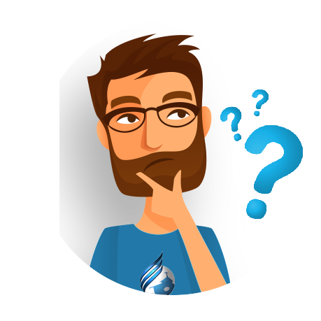

O que é Educação Física?
Você sabe o que é Educação Física? O termo Educação Física remete à ideia de educar o físico. Mas o que isso significa? Fortalecer a musculatura? Praticar esportes? Adquirir postura? Bem, a Educação Física nasceu como uma disciplina cujo objetivo era disciplinar os indivíduos a partir dos seus corpos. Ou seja: a Educação Física está historicamente atrelada a um método de dominação do indivíduo.
